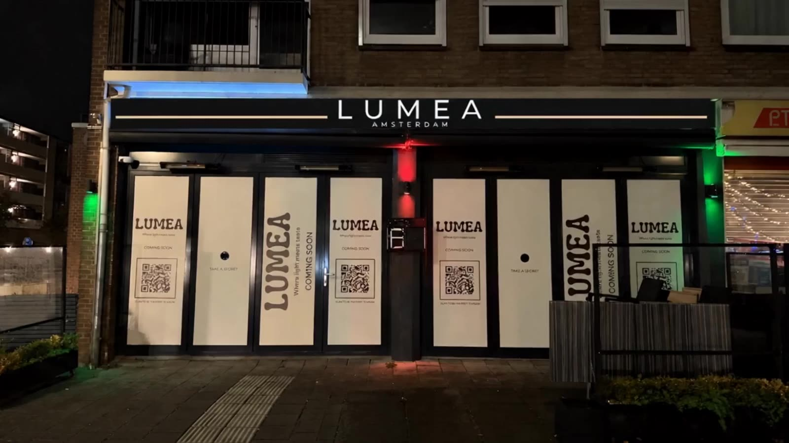
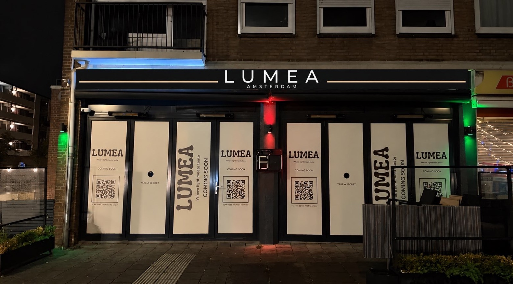
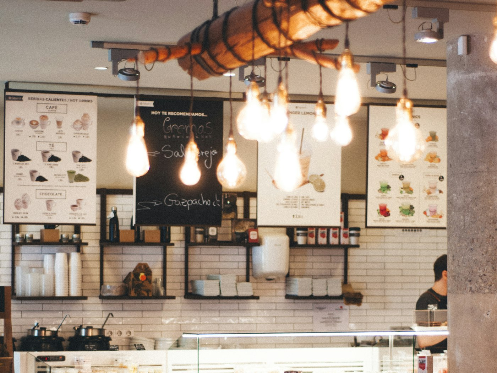

Johan Huizingalaan 192
Ontbijt en koffie
Binnenkort open

Over ons
Een ontbijtzaak in Nieuw-West
Lumea zit aan de Johan Huizingalaan 192. Ontbijt, lunch en koffie, van vroeg tot sluitingstijd. Binnenkort open.
Op de kaart staan broodjes, eieren op bestelling, bowls, tosti’s, panini’s, salades, shakes en matcha. Alles wordt gemaakt op het moment dat u bestelt, en wat u meeneemt gaat mee in papier en een beker met onze naam erop.
Zitten kan, meenemen ook
Een greep uit de kaart
Drie om mee te beginnen
De volledige kaart staat achter de code op tafel, met een foto bij elk gerecht.

Niets ligt klaar. Alles wordt gemaakt als u het bestelt.
Brood van die ochtend
Eieren op bestelling
Shakes van vers fruit
Bezoek
Johan Huizingalaan 192
Amsterdam Nieuw-West. Binnenlopen kan, reserveren hoeft niet.
Openingstijden
- Ma t/m vr [TIJD]
- Zaterdag [TIJD]
- Zondag [TIJD]
